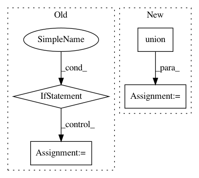

a66a9216d2d3fd193782640b4e9eb4f50f4b3697,opt_einsum.py,,_path_optimal,#,67
Before Change
current = new
// If we have not found anything return single einsum contraction
if len(new) == 0:
return [tuple(range(len(input_sets)))]
new.sort()
path = new[0][1]
return path
def _path_opportunistic(input_sets, output_set, idx_dict, memory_limit):
After Change
cost, positions, remaining = curr
// The memory limited case
idx_contract = set("").union(*remaining)
new_cost = _compute_size_by_dict(idx_contract, idx_dict)
if len(idx_contract - output_set) > 0:
new_cost *= 2
new_cost *= len(remaining) - 1
new_cost += cost
new_pos = positions + [tuple(range(len(remaining)))]
memory_limited.append((new_cost, new_pos, []))
for con in comb_iter:
In pattern: SUPERPATTERN
Frequency: 3
Non-data size: 4
Instances
Project Name: dgasmith/opt_einsum
Commit Name: a66a9216d2d3fd193782640b4e9eb4f50f4b3697
Time: 2015-05-13
Author: malorian@me.com
File Name: opt_einsum.py
Class Name:
Method Name: _path_optimal
Project Name: dit/dit
Commit Name: 146f5ddd1ac881fbebdeff83c0be0322bf7e1d74
Time: 2013-09-27
Author: chebee7i@gmail.com
File Name: dit/math/sigmaalgebra.py
Class Name:
Method Name: is_sigma_algebra__brute
Project Name: scikit-multiflow/scikit-multiflow
Commit Name: a8d354aa3f1d796ebfcf41586af1eb925f229ecc
Time: 2020-04-01
Author: 17923265+jacobmontiel@users.noreply.github.com
File Name: src/skmultiflow/lazy/knn_adwin.py
Class Name: KNNADWINClassifier
Method Name: partial_fit